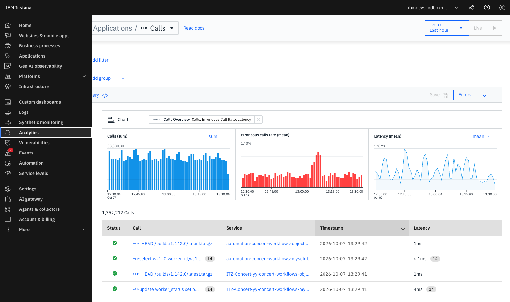
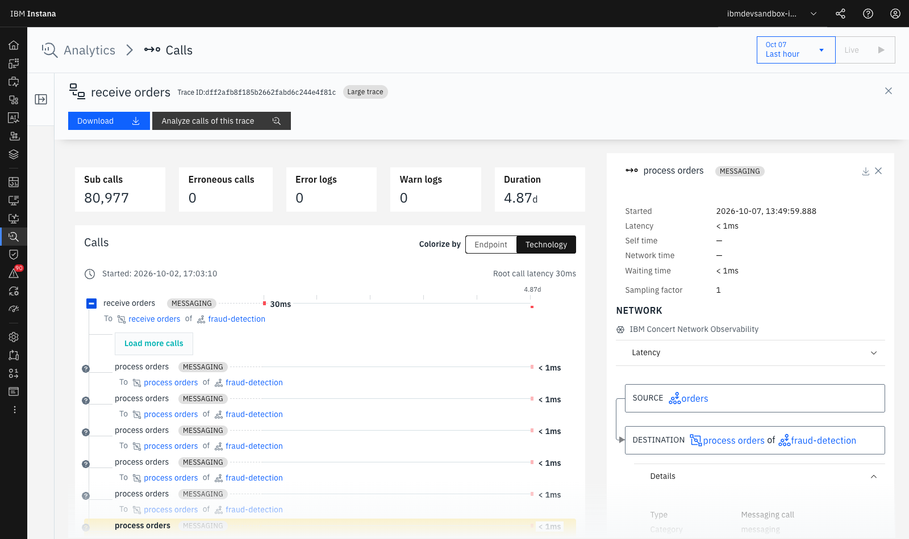

Lab 3 — 100% Tracing No-Sampling & Analytics¶
LAB 3⏱ 20 minutos
1. Fundamentos del Tracing Distribuido en Instana¶
El Distributed Tracing es el mecanismo que permite reconstruir el viaje completo de una petición a través de múltiples microservicios, capas de red, colas asíncronas y bases de datos.
El Diferencial Clave de Instana: 100% No-Sampling¶
La inmensa mayoría de herramientas APM utilizan Head-based o Tail-based Sampling, descartando hasta el 99% de las trazas para ahorrar almacenamiento. Instana rastrea y procesa el 100% de las llamadas.
| Comparativa | Herramientas APM Tradicionales | IBM Instana |
|---|---|---|
| Tasa de Muestreo (Sampling) | 1% a 5% (Muestreo probabilístico) | 100% Completo (No-Sampling) |
| Detección de errores esporádicos | Muy baja (1 error entre 1.000 se pierde) | 100% garantizado (Cero puntos ciegos) |
| Auditoría por ID de Cliente | Inviable si la traza no fue muestreada | Búsqueda inmediata por cualquier Tag/Payload |
| Exactitud en Percentiles (P99) | Aproximada por extrapolación | Matemáticamente exacta |
2. Acceso a Unbounded Analytics¶
- En el menú lateral izquierdo, haz clic en Analytics.
- Selecciona la perspectiva Applications / Calls o Traces:

-
Observa los tres paneles superiores sincronizados en tiempo real:
- Calls (sum): Gráfico de barras con el volumen total de peticiones procesadas.
- Erroneous calls rate (mean): Gráfico de barras rojas que resalta anomalías de errores.
- Latency (mean / P95): Distribución de latencias a lo largo de la ventana temporal.
3. Consultas y Filtrado Avanzado por Etiquetas (Tags)¶
En Unbounded Analytics, puedes combinar cualquier dimensión de infraestructura, aplicación o payload HTTP mediante filtros dinámicos:

Ejercicios Prácticos de Analítica:¶
Ejercicio 1: Filtrar todas las llamadas a bases de datos con latencia > 20ms
- Haz clic en Add filter +.
-
Configura los parámetros:
-
call.type=database call.duration>20ms- Observa cómo Instana aísla únicamente las consultas lentas a MySQL, PostgreSQL y MongoDB.
Ejercicio 2: Agrupar fallos por Servicio y Endpoint
- En la barra superior, haz clic en Add group + y selecciona
service.name. - Añade un segundo nivel de agrupación con
endpoint.name. - Añade el filtro
call.erroneous = true. - Resultado: Obtendrás un ranking exacto de qué endpoints generan el mayor impacto negativo en tus usuarios.
4. Anatomía de una Traza en Vista Cascada (Waterfall)¶
Haz clic sobre cualquiera de las transacciones en la tabla para abrir el visor de traza:
gantt
title Desglose de Spans en Transacción /cart/checkout (Total: 145ms)
dateFormat X
axisFormat %s ms
section Web Gateway
HTTP Entry GET /cart/checkout : 0, 145
section Cart Service
Node.js Intermediate processOrder : 10, 140
Redis GET user_session : 15, 30
section Payment Service
HTTP Exit POST /payment/charge : 35, 120
MySQL UPDATE balance : 50, 85
PayPal External API : 85, 115
section Notification
RabbitMQ Message Publish : 125, 140Elementos de Diagnóstico en la Traza:¶
- Spans y Tipos de Llamada:
- Entry Span (Azul): Entrada de la petición al microservicio (punto de inicio).
- Intermediate Span (Gris): Procesamiento interno en el runtime o ejecución de método anotado.
- Exit Span (Naranja/Rojo): Llamada saliente a una base de datos, API externa o cola de mensajes.
- SQL & Query Payloads:
- Haz clic sobre un span de base de datos (
MySQLoMongoDB). - En el panel derecho verás la sentencia SQL completa sanitizada (
UPDATE users SET last_login = ...), la base de datos de destino y el tiempo exacto que tardó el motor de BD en responder. - Mensajería Asíncrona (Kafka & RabbitMQ):
- Instana propaga el contexto de tracing a través de las cabeceras de los mensajes de Kafka y RabbitMQ, permitiendo rastrear el flujo asíncrono desde el productor hasta el consumidor.
- Excepciones y Stack Traces:
- Si un span falla (marcado con barra roja), haz clic sobre él para desplegar el Stack Trace completo del lenguaje (Java, Node.js, Python), con el nombre del fichero y el número de línea exacto donde ocurrió el error.
5. Resumen y Checklist del Lab 3¶
Al finalizar este laboratorio, has adquirido las competencias para:
 Comprender el valor del tracing distribuido al 100% sin muestreo (No-Sampling).
Comprender el valor del tracing distribuido al 100% sin muestreo (No-Sampling).- Utilizar Unbounded Analytics para construir consultas analíticas sobre millones de registros.
- Segmentar y agrupar transacciones por múltiples etiquetas de alta cardinalidad.
- Diagnosticar cuellos de botella en la vista Waterfall, analizando sentencias SQL, llamadas HTTP externas, colas Kafka/RabbitMQ y excepciones de código.